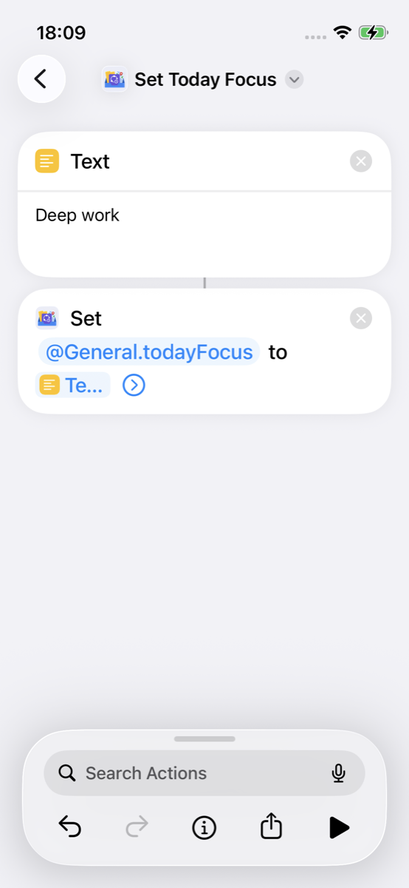
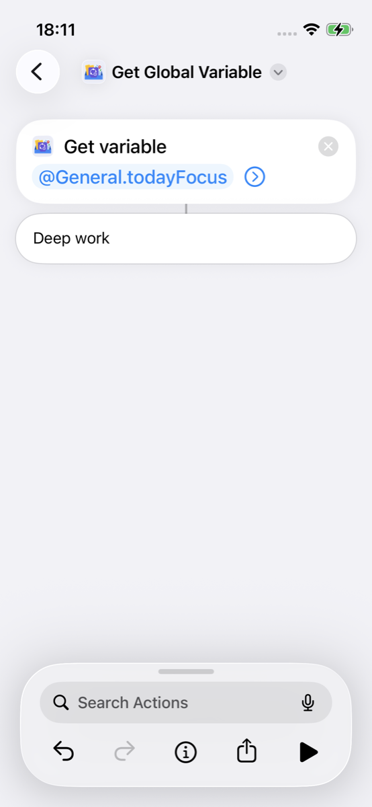
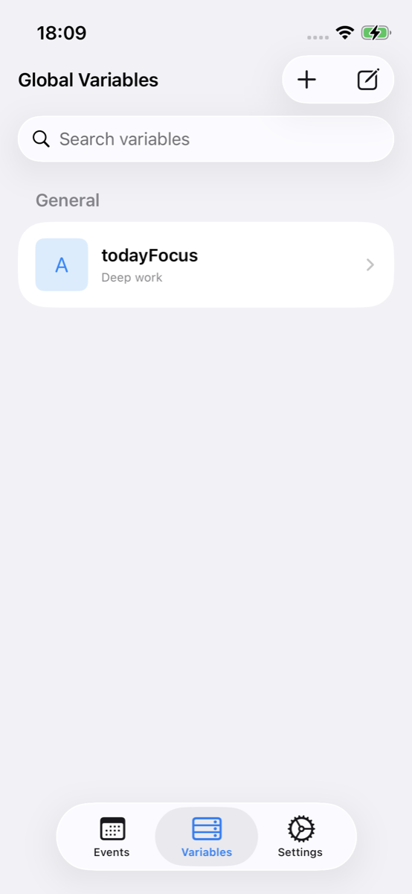

Global variables
What you’ll build
Two shortcuts that share Key Path
@General.todayFocus (for example
Deep work):
Set Today Focus writes with
Set Global Variable;
Get Today Focus reads with
Get Global Variable and shows the result. Running
them as separate shortcuts is the point—any later shortcut can Get
the same tag for notifications or other actions.
Why not Shortcuts Set Variable / Get Variable?
Built-in Shortcuts Set Variable and Get Variable (and magic variables) mainly pass values inside one run of one shortcut. When that run ends, they are not a durable store you can rely on tomorrow—or from another shortcut.
A name you Set in shortcut A is not a shared library that shortcut B can Get. Magic variables also cannot jump across shortcuts.
Set Global Variable /
Get Global Variable in AnyStash write to the app’s
persistent store. Any shortcut that calls Get with the same Key Path
can read it, and you can view the same value in the
app’s Variables tab. Key Paths use
@Module.key (this example:
@General.todayFocus). Full syntax:
Support → Concepts.
This example is short—build the two shortcuts below (no import link). Run Set Today Focus first, then Get Today Focus.
Build it yourself
-
Shortcut 1 — Set Today Focus: New shortcut → search AnyStash → add Set Global Variable (not the Text-only variant). Key Path:
@General.todayFocus. Choose Text (or Auto) and enter a sample value such as Deep work.Optional: to pass a value from another action in the same shortcut, long-press Value and choose that magic variable (or Select Variable).

Set Global Variable + Key Path -
Shortcut 2 — Get Today Focus: Create a second shortcut. Add Get Global Variable with the same Key Path, then Show Result.

Get Global Variable + Show Result
Try it
Run the shortcuts after building—Set first, then Get.
-
Run Set Today Focus.
-
Run Get Today Focus and confirm the result shows your focus tag.
View in the app
Use the app only to confirm what Shortcuts wrote—you do not need to create the variable in the Variables UI for this example.
-
Open AnyStash → Variables and confirm
todayFocus(under General / the matching Key Path) shows the same value.
Variables tab — view todayFocus
Key Path: @General.todayFocus —
module General, key todayFocus. More
rules and examples:
Concepts.
Next
- Concepts — Key Path syntax
- Parking example — Live Activity + Automations
- All examples